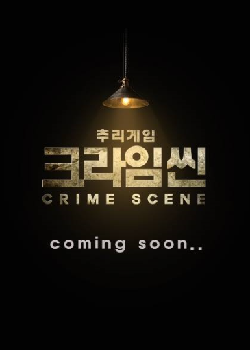
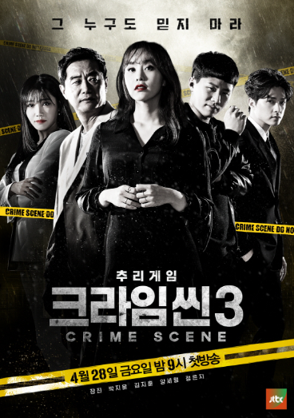

홈으로
홈으로
Young's House
Young's House
크라임씬 시즌1
크라임씬 시즌2
크라임씬 시즌3
프로그램 설명
살인사건 속에서 플레이어들이 직접 사건과 관련된 인물로 분하는 RPG(Role Playing Game) 게임 형식.
끝까지 정체를 숨겨야 하는 범인과 날카로운 추리로 범인을 찾아내야 하는 용의자 간의 긴장감 넘치는 마피아 게임이 접목된 신개념 추리쇼
피해자의 방 출입구는 거실로 연결되어 있으며 다른 출입구는 창문뿐이다. 사건현장은, 현장에 휴대폰을 두고 온 도창수 사장이 폰을 놓고 온 것을 깜박하고 되돌아왔다가 발견했다. | ||
피해자는 측두부 외상으로 사망했으며 사망추정시간은 19:20~20:20이고 피해자 상의에는 파란 물감이 잔뜩 묻어 있다. | ||
모든 사람들이 대피했으나, 단 한 명 이상미 팀장의 모습만 보이지 않았다. 아무런 외상도 없었으며 사망 추정시각은 21시 55분~22시 30분이다. | ||
한 명은 독방의 주인 전조폭으로 둔기에 머리를 맞아 피를 흘린 채 정신을 잃고 쓰러져 있었다. 다른 한 명은 피해자 이창우로 전조폭의 옆에서 교살된 채 발견되었다. | ||
목욕가운을 입은 채 쓰러져 죽은 고 여사는 이마에 상처가 있었고, 가운에 혈흔이 낭자한 상태였다. | ||
신영광 심판은 얼굴에 크고 작은 상처가 많았고 피가 낭자한 더스트백으로 얼굴이 덮여 있었으며 한 손에 부심기가 쥐어져 있었다. 사망 추정시각은 전날 밤 22시~23시 사이였고, 피해자의 시계는 10시 15분에 멈추어져 있었다. | ||
사건 당일 저녁, 전효진은 촬영중 지금 기분으로 촬영 못하겠다고 박엔터에게 문자를 남긴 다음 잠적했다. 그리고 이들은 현장 내 고문실에서 영화 대본대로 욕조에서 정에 찔린채 장미꽃잎으로 뒤덮인 피해자를 발견한다. |
피해자는 26세 여성으로 참가번호 28번 강력한 우승후보였던 서울 眞 박혜리로 확인됐다. 그녀는 왜 무대에 오르지 못하고 살해된 채 발견 된 것일까. | ||
피해자는 센터 크루즈의 부선장 유기환으로 창고에서 다량의 피를 흘린채 죽어있었다. 사체발견 당시 하선기념 불꽃놀이가 진행되던 중이었고 불꽃놀이에 모습을 드러내지 않았던 5명의 사람이 용의선상에 오르는데... | ||
혐의를 벗은 용의자들이 모두 집으로 돌아가려던 그 순간, 갑자기 쓰러지는 홍선장! 그대로 사망하고 마는데... 시체의 손끝에서 미세한 상흔이 발견되고 현장에 있던 사람들이 용의선상에 오르며 새로운 사건이 시작된다. |
피해자는 굵직한 사건들을 해결했던 정종찬 교수! 사체 발견 당시, 그는 케이블 타이로 결박당한 채 두부에 외상을 입어 피를 흘리고 있었는데... | ||
그물에 걸려 모습을 드러낸 것은 팔이 잘린 젊은 여자의 시체! 피해자는 팔뚝섬의 보건 진료소장으로 부임해 일하던 간호사 조유림으로 사체 발견 당일 임기를 마치고 서울로 떠날 예정이었는데... |